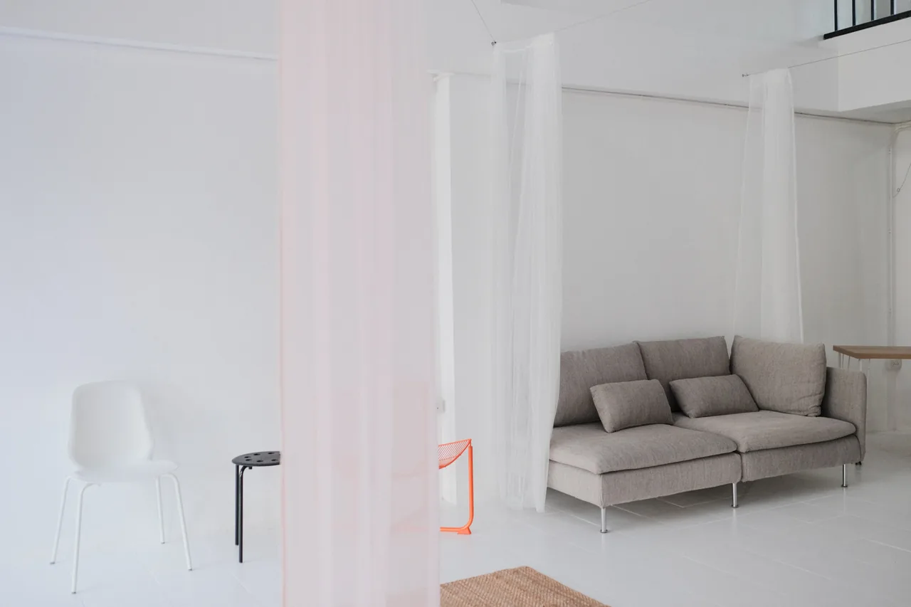
Our Work
Visual Portfolio
A curated selection of work produced inside these walls.
The Studio
Spaces & Sets
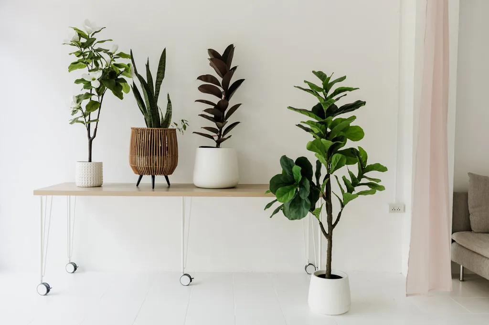
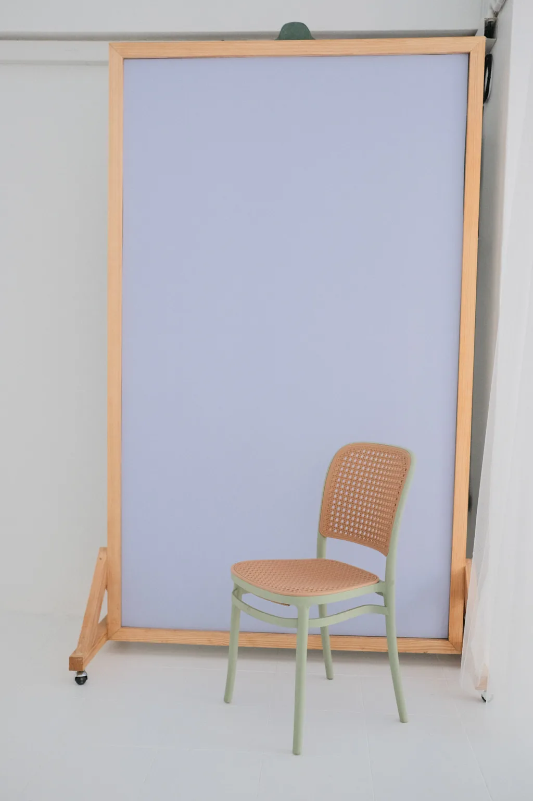
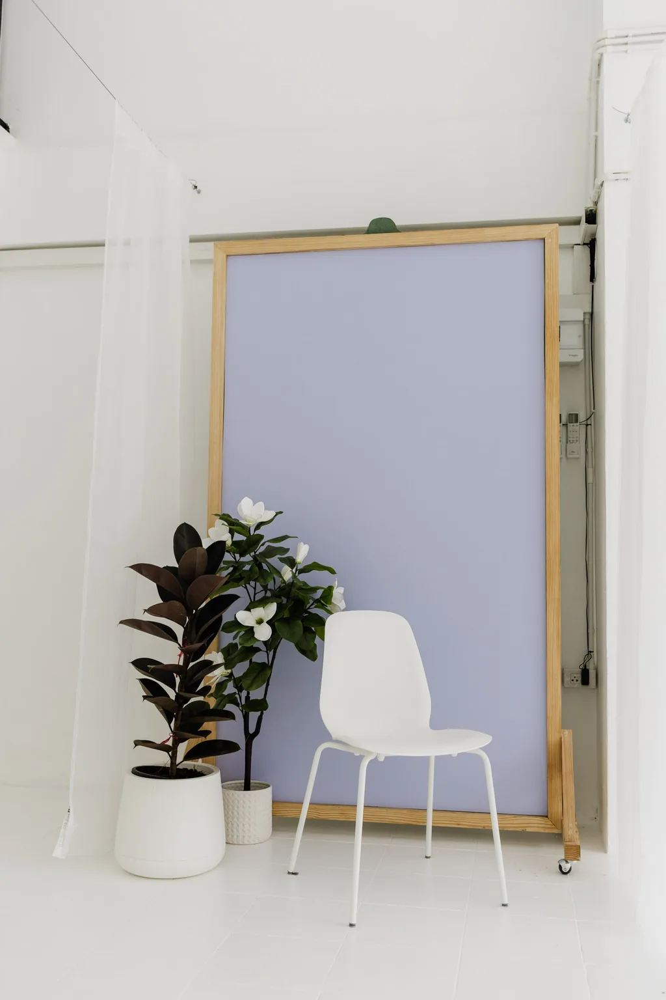
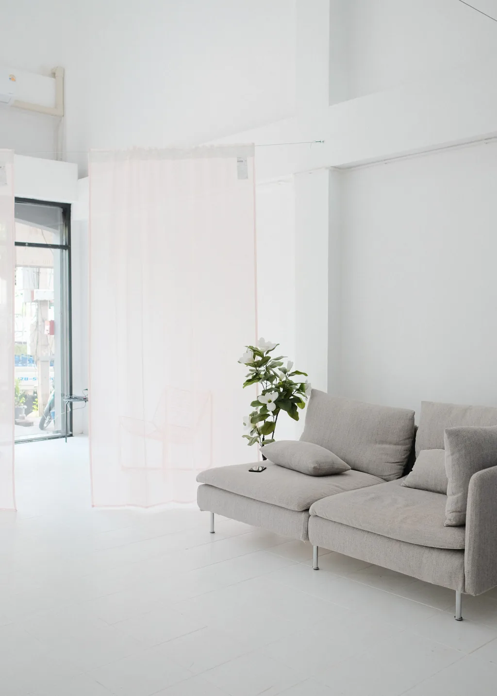
Lifestyle
Soft light, strong results
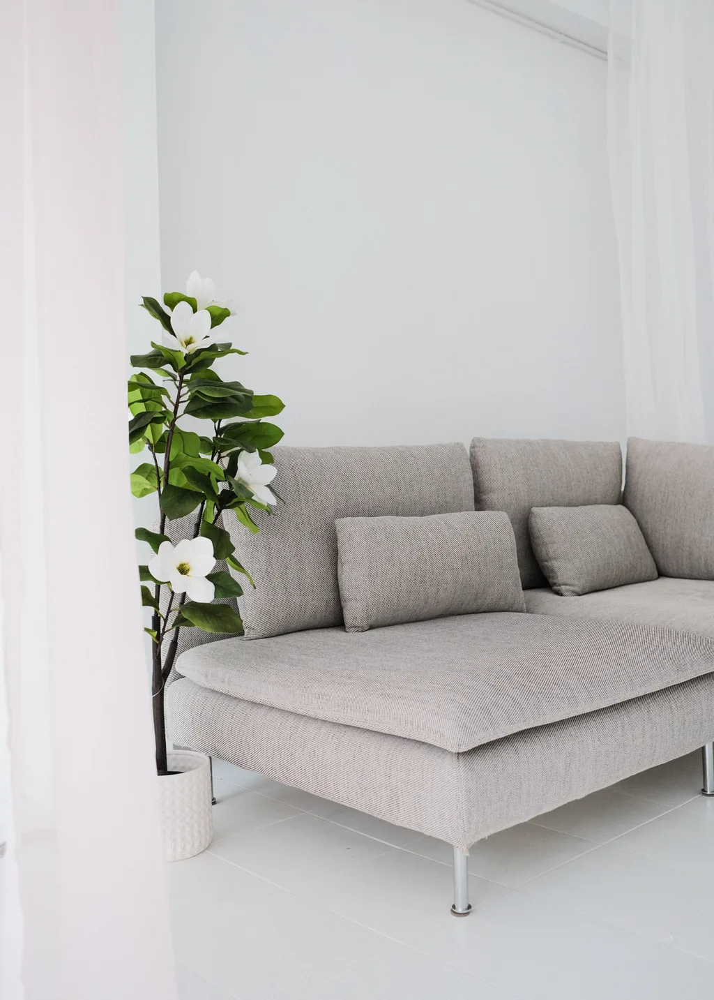
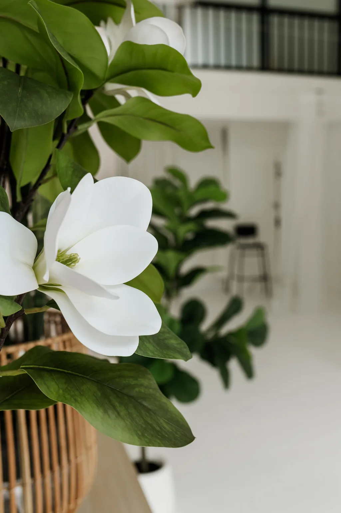
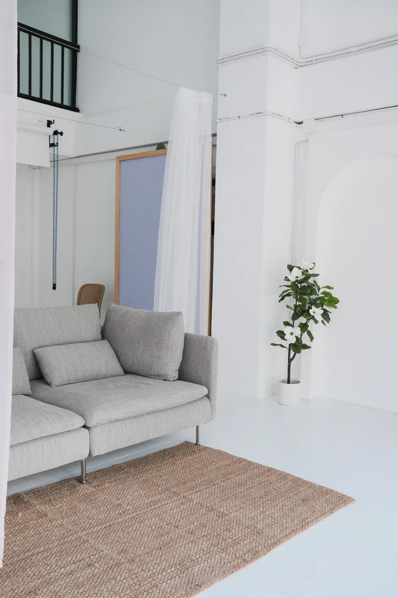
Podcast & Video
In conversation
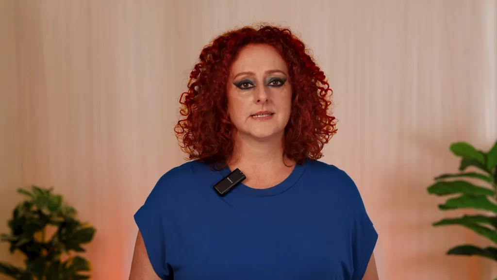
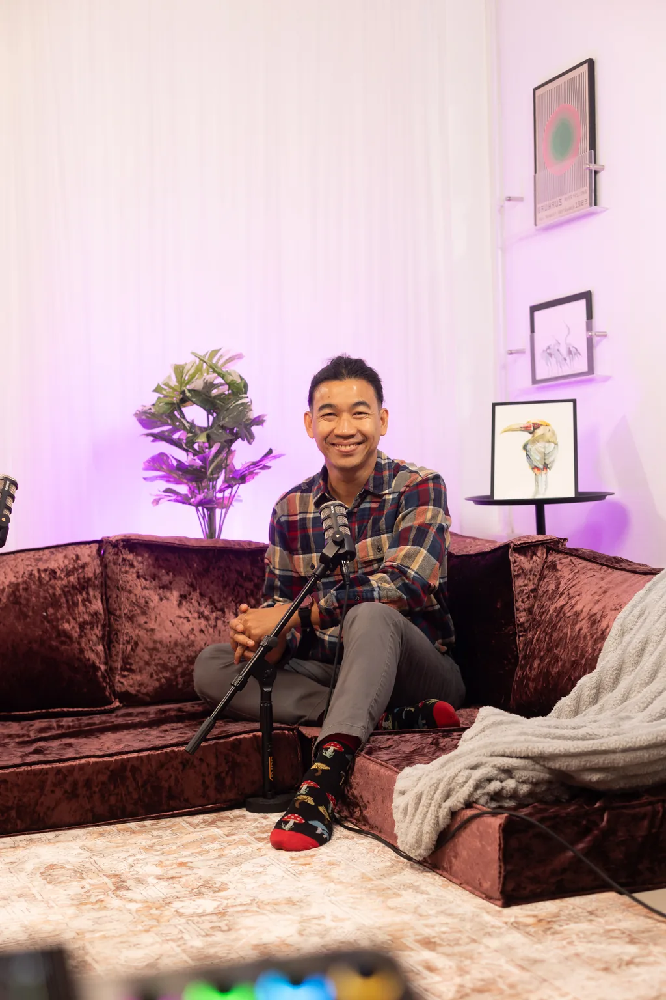
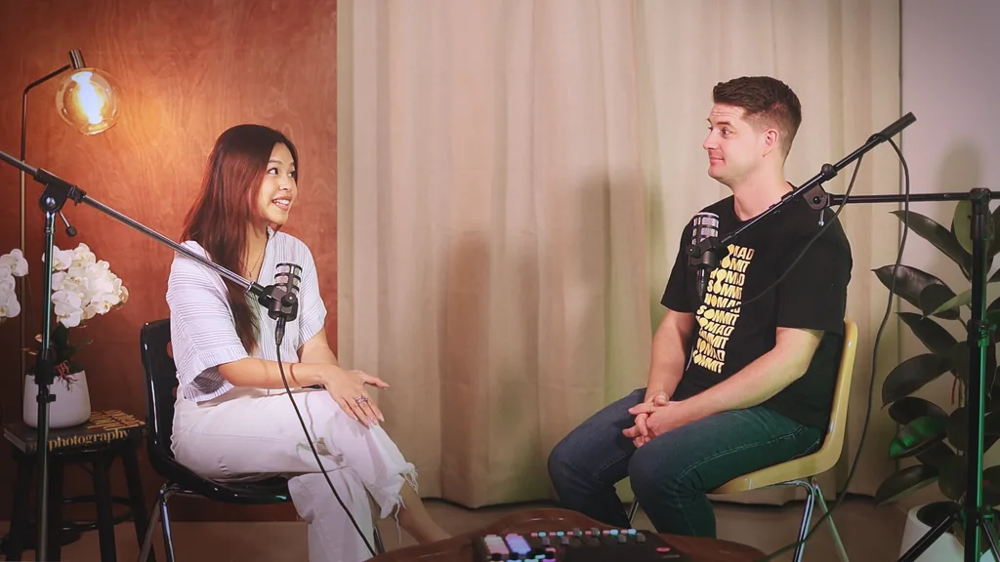
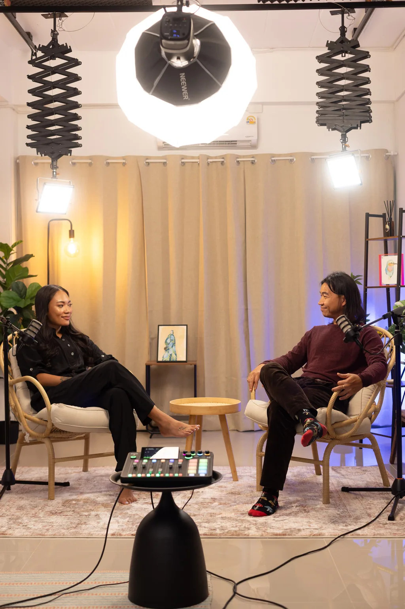
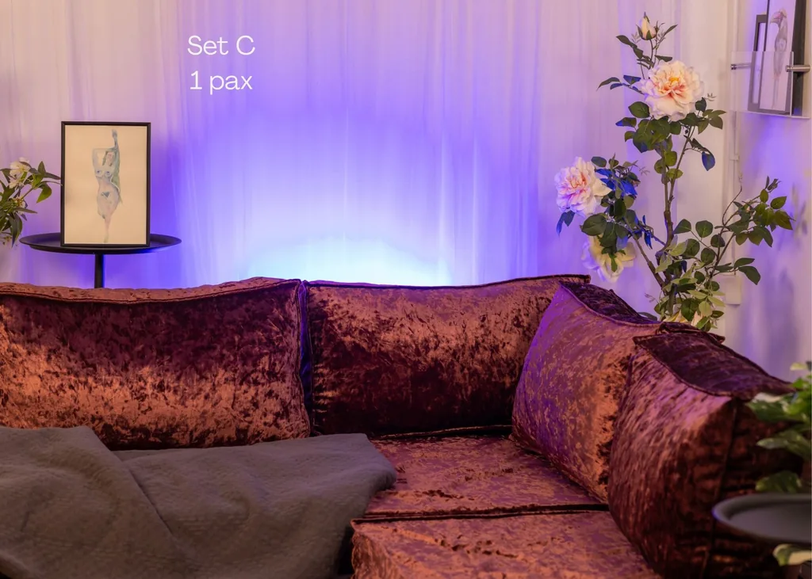
Your turn
Create your chapter
Book the studio and add your work to this collection.